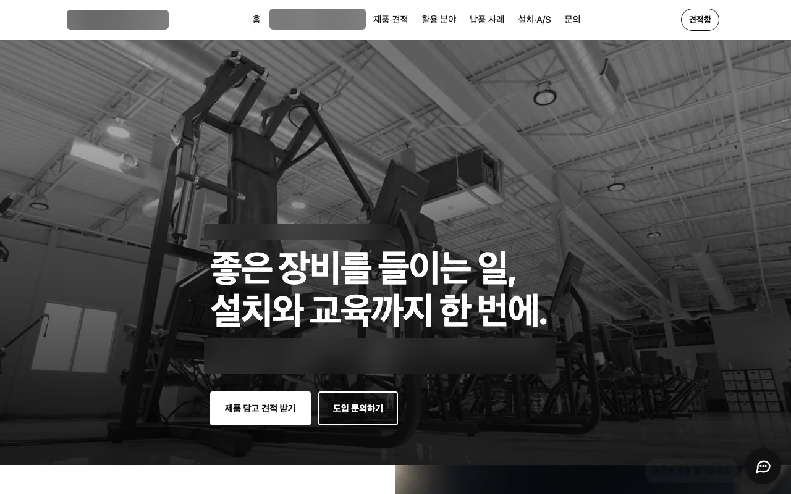

클로드와 함께 일해 온 방식
AI(클로드)를 일꾼처럼 부려 홈페이지, 앱, 콘텐츠, 광고를 만들어 왔습니다. 지금까지 한 일을 보여 드리고, 대표님들 눈에는 어떻게 보이는지 듣고 싶습니다.
한눈에 보기
지금까지 만들고 운영해 온 것을 한 표로 정리했습니다. 아래에서 눌러 보면 자세히 나옵니다.
홈페이지 · 앱
- 플랜짐 홈페이지PT·필라테스 스튜디오 소개와 상담 신청공개 중열어 보기 ↗
- 플랜짐 예약·회원관리 앱예약, 남은 횟수 차감, 선생님 일정제작 중
- 프리미엄임포트 홈페이지피트니스 장비 수입사 통합 사이트(초안)제작 중열어 보기 ↗
- 최은영 작가 홈페이지작가님의 작품과 소식공개 중
3D · 체험
콘텐츠 · 광고
- 블로그 여러 개 운영주제별 블로그의 기획, 초안, 분석 반복공개 중
- 카드뉴스 · 릴스브랜드별 규칙으로 표지와 대본까지 제작공개 중
- 인스타 광고직접 세팅해 소재별 반응 비교공개 중
- 카이저 뉴스레터웹페이지 형태 뉴스레터 발행 틀제작 중
만드는 도구 · 운영
- 콘텐츠 진행판과 규칙 문서진행 상태, 브랜드 규칙, 금지 표현 목록내부 사용
- AI 그림 생성 도구내 컴퓨터에서 돌리는 그림 생성, 광고·블로그용내부 사용
- 가상 사무실 화면여러 작업 창의 진행 상황을 한 화면에서 보기내부 사용
- 이짜 유튜브반려견 채널 시험 프로젝트, 반응 없으면 접기시험 중
지금까지 만든 것 (눌러서 열어 보세요)
플랜짐 홈페이지PT·필라테스 스튜디오 소개와 상담 신청 사이트

- 첫 화면에서 "체험수업 문의"와 "간단 상담 신청"으로 바로 이어지게 설계했습니다.
- 평가, 프로그램, 그룹수업, 어린이, 회원 사례, 가격, 오시는 길까지 한 사이트에 담았습니다.
- 회원 예약 버튼과 채팅 문의 버튼을 모든 화면에 두었습니다.
- 실제 플랜짐 홈페이지 열기 ↗
예약·회원관리 앱예약, 남은 횟수, 선생님 일정을 한곳에서

- 예약과 취소, 남은 횟수 자동 차감, 홀딩과 만료를 처리합니다.
- 선생님 불가 시간과 휴일, 주말 당번표를 반영합니다.
- 선생님이 수락해야 예약이 확정되는 방식과 담당 선생님 고정을 지원합니다.
- 현재 개발 중이며 오픈을 준비하고 있습니다.
프리미엄임포트 홈페이지피트니스 장비 수입사 통합 사이트

- 두 브랜드(카이저, 토크피트니스)를 한 사이트에서 소개합니다.
- 제품·견적, 활용 분야, 납품 사례, 설치·A/S, 문의 메뉴를 만들었습니다.
- 견적함과 문의 양식으로 도입 문의를 받는 구조입니다.
- 제작 중인 초안 단계입니다.
- 프리미엄임포트 초안 열기 ↗
작가 홈페이지 · 극장 좌석 3D 시야작품 소개 사이트와 좌석별 시야 확인 페이지
- 작가님의 작품과 소식을 담은 개인 홈페이지를 만들어 드렸습니다.
- 극장 좌석을 고르면 무대가 어떻게 보이는지 3D로 확인할 수 있는 페이지를 만들었습니다.
- 토월극장 3D 좌석 시야 열기 ↗
콘텐츠 운영 · 광고 집행블로그, 스레드, 카드뉴스, 릴스와 인스타 광고
- 아래 "콘텐츠를 만드는 방식"과 "관리하는 방식"에서 자세히 보여 드립니다.
- 인스타 광고를 직접 세팅해 돌려 보고, 소재별 반응을 비교했습니다.
제가 콘텐츠를 만드는 방식
운영하는 블로그와 SNS는 아래 순서로 반복해서 만듭니다. 사람이 판단할 곳과 AI가 빠르게 해 주는 곳을 나눈 것이 핵심입니다.
① 주제 찾기반응이 좋은 경쟁 소재와 이슈를 매일 모아 정리합니다. 무엇을 쓸지는 제가 고릅니다.
② 기획과 구조제목 후보, 핵심 요약, 글의 뼈대를 AI와 함께 짭니다. 직접 겪은 내용을 먼저 확인해 넣습니다.
③ 초안 제작정해 둔 형식으로 글, 카드뉴스, 릴스 대본 초안을 만듭니다. 카드뉴스는 표지 디자인 규칙을 고정해 두었습니다.
④ 사람 검수와 발행사실 확인과 표현은 사람이 봅니다. 자동화는 임시저장까지만 하고 발행은 사람이 누릅니다.
⑤ 숫자로 복기정해진 주기로 조회와 반응을 분석하고, 다음 글의 주제와 제목에 반영합니다.
카드뉴스와 릴스는 이렇게 만듭니다
카드뉴스원고 → 브랜드별 디자인 규칙(색, 글꼴, 말투 고정) → 화면 시안 → 이미지로 저장 → 검수 → 업로드. 표지 규칙을 미리 정해 두어 몇 장을 만들어도 같은 얼굴이 나옵니다.
릴스기획안 → 나레이션 대본 → 샷 리스트와 자막 → 커버 시안 A/B → 캡션 → 게시. 촬영과 편집은 사람이, 글과 구성은 AI와 함께 합니다.
콘텐츠는 이렇게 관리합니다
진행판 한 장아이디어마다 브랜드, 채널, 형식, 우선순위, 상태, 담당, 기다리는 것, 기획·초안·게시 링크를 한 줄로 관리합니다. 어디서 막혔는지 바로 보입니다.
역할 분담기획, 원고 제작, 영상 제작, 디자인, 광고를 나누고 각자 맡은 일만 합니다. 소재를 기획하는 쪽과 만드는 쪽이 분리되어 있습니다.
브랜드 규칙 문서브랜드별 색과 말투, 쓰면 안 되는 표현 목록을 파일로 두고 모든 작업이 먼저 읽습니다. 사람이 바뀌어도 기준이 유지됩니다.
열린 항목과 성과 기록미룬 일과 확인할 일을 목록으로 남기고, 게시물 반응 숫자는 정해진 주기로 기록해 다음 소재에 반영합니다.
제가 일할 때 지키는 기준
- 사람이 최종 확인합니다. 공개 전에 담당자가 승인합니다.
- 효과나 성과를 보장하지 않습니다. 숫자는 측정한 만큼만 말합니다.
- 의료·표시광고 기준에 어긋날 수 있는 소재는 만들지 않습니다.
- 고객 개인정보는 다루지 않습니다.
대표님들께 듣고 싶은 것
제 시각은 한쪽에서 본 것이라, 다른 쪽에서 어떻게 보이는지 듣고 싶습니다.
- 지금까지 한 일을 보시고 눈에 띄는 점과 아쉬운 점은 무엇인가요?
- 이런 방식이 바디움 같은 사업에서 쓸모가 있다면 어느 부분일까요?
- 이런 일을 하는 사람이나 업체를 볼 때 가장 중요하게 보시는 것은 무엇인가요?
- 숏드라마형 릴스는 어떻게 기획하고 성과를 판단하시나요? 제가 해 본 댓글 유도 릴스와 비교해서 듣고 싶습니다.
- 의료·광고 표현은 현장에서 어떻게 점검하시나요?
- 제가 놓치고 있는 시각이 있다면 무엇일까요?